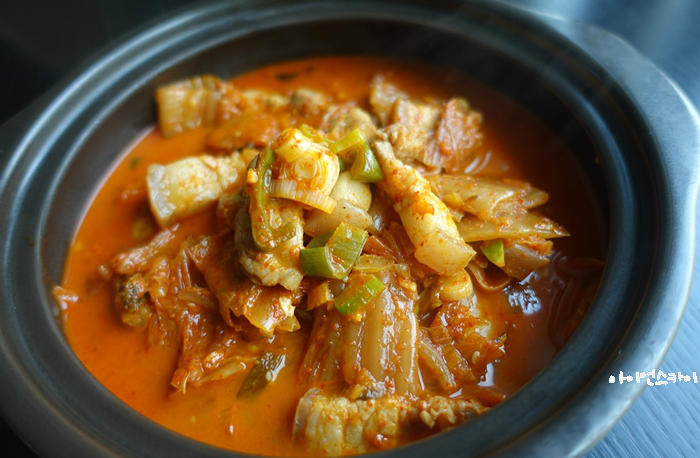

김치찌개 레시피
재료
- 돼지고기 삼겹살 200g
- 김장김치 2종이컵
- 대파 약간
육수내기
- 다시마 1장
- 멸치 한 줌
양념장
- 다진마늘 1
- 설탕 1

레시피
- 다시마 1장과 멸치 한줌을 넣고 20분간 끓여 육수를 만들어준다.
- 삼겹살 200g을 냄비에 볶아준다.
- 냄비에 김치도 같이 넣고 설탕 1스푼을 넣어준다.
- 약 10분간 잘 볶아졌다면 만들어놓은 육수를 재료가 잠길만큼 넣어준다.
- 한소끔 끓인뒤 다진마늘 1스푼을 넣어준다
- 마지막으로 대파를 넣고 끓여준다.
- 간을 보고 싱거우면 조금더 끓여서 졸여주고 짜면 육수를 조금 부어준다.